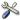
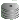
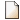
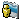
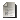

Figure 2.The SAMS WEB-interface
In Figure 2 the main SAMS WEB-interface page is shown.
Figure 2.The SAMS WEB-interface
The left frame provides links to the SAMS function (if available to your user). The right bottom frame contain icons for launch the SAMS dialogs. The SAMS dialogs and statistics reports show in the right top frame.
|  | SAMS administration - configuring the SAMS and manage a users with Administrator right. |
| SQUID - Manage the SQUID proxy. | |
|  | MySQL - Manage the SAMS database. |
| Redirection - create, edit and remove the URL rediretion list. | |
| URL access forbidden - create, edit and remove the access forbidden to URL list. | |
| Regular expressions - create, edit and remove the access forbidden to words list. | |
|  | Local domains - List of local domains. |
|  | Users templates - create, edit and remove the users templates. |
| Users groups - create, edit and remove the users groups. | |
| Users - Create, remove users and build reports of users traffic | |
| Monitor - Real time users traffic monitoring. | |
|  | Journal - Log of the users with Administrator rights. |
| Save configuration - BackUp the SAMS databases. |